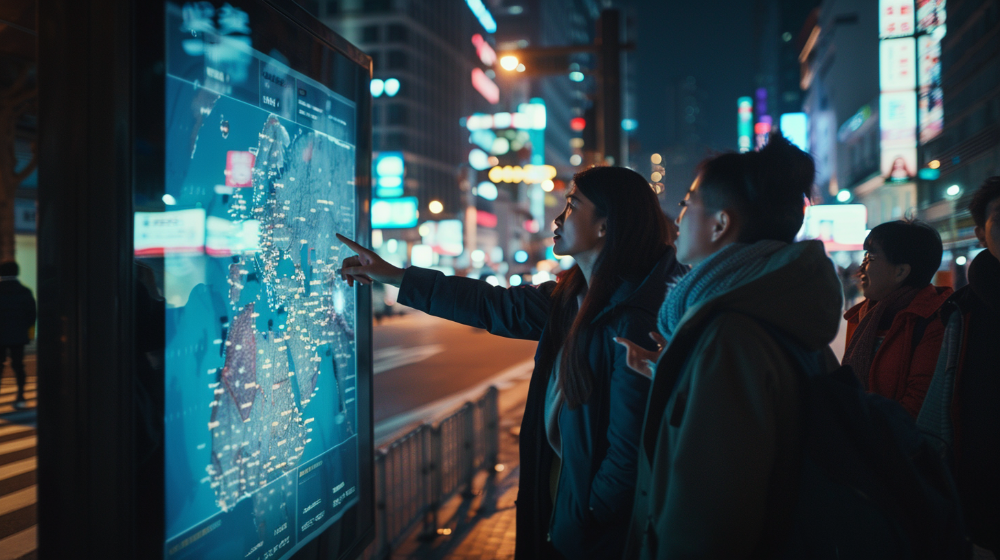
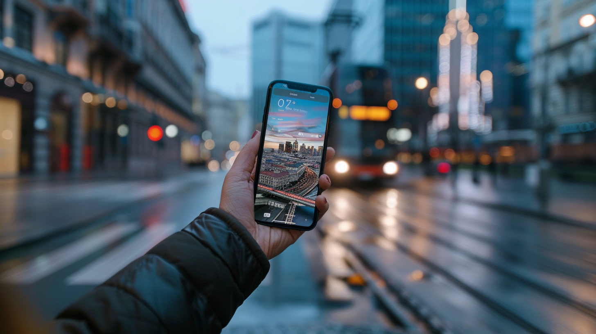

Ready for a smarter way to travel? See how AI takes your past trips and turns them into personalized adventures with the latest travel tech innovations!

In today’s fast-paced travel world, artificial intelligence (AI) is transforming how we explore the globe. No more cookie-cutter trips or generic itineraries—AI for destination recommendations is changing the game, offering personalized adventures based on your unique preferences and past travels.
It’s not just about picking a place to visit; it’s about crafting a journey that feels like it was made just for you, connecting to your story and what excites you most. Whether you’re looking for hidden gems or bucket-list spots, AI is shaping travel experiences like never before.
AI’s integration into the travel industry has been a transformative journey, reshaping how we plan and experience travel. Initially, AI’s role was limited to basic chatbots and simple recommendation systems, offering standard travel suggestions with little personalization. But as intelligent algorithms became more advanced and data collection methods more sophisticated, AI for destination recommendations has evolved into a highly powerful tool.
Today, AI is present at every stage of the travel process, from inspiring your next AI trip to enhancing your experience throughout the journey. Travel platforms now harness enormous amounts of data, such as search histories, booking behaviors, and in-trip actions, allowing AI algorithms to predict travel preferences and provide tailored suggestions. The ability of AI to sift through these data points helps deliver travel recommendations that feel personal and intuitive, creating an effortless experience for the traveler.
For example, imagine arriving in a new city and receiving a notification about a hidden gem restaurant that fits your specific culinary preferences. Or picture AI recommending an impromptu ticket to a concert by your favorite artist while you’re on the go. With AI for destination recommendations, it’s not just about logistics anymore—AI anticipates your desires and delivers options that feel like they were hand-picked for you.
Airlines, hotels, and travel agencies have embraced AI to optimize their services as well. Airlines use AI to streamline route planning, predict maintenance needs, and even offer personalized in-flight experiences based on passenger preferences. Hotels have integrated AI-driven smart room controls and virtual concierge services that learn and adapt to your needs. Traditional travel agencies, once threatened by the rise of online booking platforms, have now found new life by combining human expertise with AI-driven insights to build AI tools for travel and tourism.
In short, AI for destination recommendations has redefined travel, turning what used to be a time-consuming, generic process into a seamless and personalized experience.
At the core of AI’s ability to deliver personalized travel experiences is its sophisticated analysis of your travel history. AI for destination recommendations goes far beyond simply remembering that you enjoyed a beach vacation or prefer aisle seats on flights. It carefully examines patterns from previous trips, accommodations, activities, and dining experiences to uncover preferences that you may not even realize you have.
AI looks at subtle details, such as your affinity for boutique hotels with modern art installations or your habit of seeking out local food markets in new cities. These insights go deeper than surface-level likes and dislikes, with AI algorithms analyzing the feedback you’ve provided through reviews and ratings. If you raved about a hotel’s breathtaking views or noted that a particular tourist attraction was too crowded for your taste, AI for destination recommendations takes that into account when making future suggestions.
Explicit preferences are just as important. Whether you’ve declared a love for adventure sports, luxury spa getaways, or historical city tours, AI combines these stated interests with the patterns found in your travel history to create highly personalized recommendations. By balancing what you’ve enjoyed in the past with new possibilities, AI for destination recommendations ensures that every trip feels unique while still aligning with your core preferences.
On the technical side, machine learning algorithms, such as neural networks and deep learning systems, process massive travel datasets to identify patterns and predict future travel behaviors. As AI systems are exposed to more data, they refine their models, making destination recommendations even more accurate and tailored over time. The more you travel and engage with the system, the more it learns and adapts.
However, with this level of travel personalization comes responsibility. The use of personal data in AI trip planners raises ethical concerns, particularly around data privacy. Transparency is key—travelers should be aware of how their data is used, and have the ability to control how AI recommendations are applied to their travel choices. Striking a balance between personalization and data privacy is crucial for building trust in AI for destination recommendations and ensuring that travelers feel comfortable using AI-powered travel services.
With a deep understanding of your travel preferences, AI for destination recommendations turns travel planning into a personalized journey. The days of generic top-10 lists are gone, replaced by curated suggestions that feel as if they were crafted by a friend who truly knows your tastes and interests.
AI’s magic lies in its ability to balance familiarity with novelty. It recognizes the types of experiences you’ve enjoyed in the past, such as cultural tours in European cities, while introducing you to new adventures. For example, if you loved those cultural explorations, AI for destination recommendations might suggest a lesser-known historical town in Asia, offering a similar depth of culture but in a completely new setting. This combination of comfort and discovery is what makes AI-powered travel so unique.
Innovative travel apps now leverage AI to enhance the planning process in exciting and immersive ways. Virtual reality (VR) previews, powered by AI, let you explore potential travel destinations before committing. Imagine taking a virtual walk through the bustling streets of Tokyo or watching a breathtaking sunset over Santorini, all from the comfort of your home.
One of AI’s most powerful features is its ability to craft personalized itineraries. By analyzing your preferences, budget, and even factors like your fitness level, AI for destination recommendations creates a day-by-day travel plan that suits your style. It might suggest beginning your morning at a local café you’ll love, followed by a walking tour of hidden city gems, and capping the evening off with dinner at a restaurant perfectly aligned with your culinary tastes.
What makes AI truly special is that it learns as you travel. Every interaction—whether booking a suggested hotel or skipping an activity—teaches the system more about your preferences. This continuous feedback loop allows AI for destination recommendations to be refined and improved, ensuring that your future travel experiences are even more personalized and tailored to each trip you take.
AI’s influence on travel goes beyond just planning; it enhances every aspect of the journey. With AI for destination recommendations, your interests are analyzed to create personalized experiences. Whether it’s finding hidden art galleries, booking a local cooking class, or discovering a secluded hiking trail, AI tailors your itinerary to match your passions.
One of the biggest advantages of AI for destination recommendations is the time it saves. Instead of spending hours researching travel recommendations, comparing hotels, and reading reviews, AI simplifies the process by curating options that align with your preferences. Not only does this save valuable time during the planning phase, but AI also enhances your trip by optimizing your itinerary in real-time. It recommends the best times to visit attractions, avoids crowds, and provides up-to-date transportation information, ensuring a smooth and hassle-free experience.
AI also excels at helping travelers get the best deals. By analyzing pricing trends, seasonal variations, and promotions, AI for destination recommendations pinpoints the most cost-effective times to book flights, hotels, and other experiences. This ensures that you maximize your travel budget without compromising on the quality of your trip, offering a win-win situation for both savings and satisfaction.
However, while AI excels at processing vast amounts of data and making precise recommendations, human expertise still plays a critical role. The intuitive understanding that comes from personal experience can add a special touch that AI cannot replicate.
Over-relying on AI for destination recommendations can sometimes create a “filter bubble,” where suggestions become too focused on past preferences, limiting exposure to new and unexpected experiences. While AI is great at finding what aligns with your tastes, it may not always capture the emotional and atmospheric nuances that make a destination truly special. A combination of AI’s capabilities and the spontaneity of travel leads to richer, more memorable journeys, allowing for a balance between predictability and surprise.
To fully grasp the impact of AI for destination recommendations, real-world examples offer valuable insight. Take Sarah, a frequent TravelAI user who typically enjoyed cultural tours across European cities. Based on her travel history and preferences, TravelAI suggested something new—a trip to Kyoto, Japan. Although this was outside her usual destination choices, AI for destination recommendations identified her passion for historical architecture, traditional crafts, and local cuisine, all of which are key elements in Kyoto’s cultural landscape.
The AI didn’t just recommend the destination; it crafted a personalized itinerary. Sarah was booked at a boutique hotel in a restored machiya (traditional Japanese townhouse), complete with a private tea ceremony and a guided tour of lesser-known temples. To further cater to her love for traditional crafts, TravelAI suggested a day trip to a nearby artisan village. This tailored experience allowed Sarah to explore something new while still aligning with her core interests, creating a travel adventure that pushed her beyond her comfort zone yet felt entirely personal and fulfilling.
Another compelling example shows how AI can solve unexpected travel challenges. When a volcanic eruption in Iceland grounded flights across Europe, one airline used AI to quickly reroute passengers and offer personalized updates. The AI analyzed each traveler’s final destination, connecting flights, and even visa requirements to suggest the best alternative routes. This efficient, AI-driven response turned what could have been a disastrous experience into a manageable situation, helping travelers reach their destinations with minimal disruption.
These examples highlight the transformative power of AI for destination recommendations. Not only does it tailor travel experiences to individual preferences, but it also solves real-world challenges, demonstrating that AI can elevate every stage of travel.

Looking ahead, the future of AI for destination recommendations promises even more immersive and personalized experiences. One exciting prospect is the integration of virtual reality (VR), powered by AI, allowing travelers to explore destinations fully before booking. Imagine virtually walking through a hotel room, touring a museum, or even experiencing the ambiance of a restaurant—all from your living room. This “try before you buy” approach could revolutionize decision-making in travel, giving travelers a more informed sense of what to expect.
AI-powered local guides and concierges are another development on the horizon. Advanced chatbots or augmented reality (AR) apps could offer real-time, personalized insights as you navigate a new city. From historical facts and cultural context to up-to-the-minute suggestions based on weather or crowd levels, AI for destination recommendations could evolve into a full-fledged travel companion, making each experience richer and more tailored to your preferences.
Another exciting possibility is AI’s growing ability to predict and prevent travel disruptions. By analyzing data on weather patterns, air traffic, and global events, AI for destination recommendations could foresee potential delays or cancellations. This would allow travelers to adjust their plans proactively, minimizing stress and uncertainty, and ensuring smoother travel experiences.
As AI evolves, continuous investment in research and development will be critical to improving its accuracy and reliability. AI systems must constantly refine their models using real-world data and traveler feedback to remain effective. At the same time, ethical considerations—such as data privacy, algorithmic bias, and equitable access—must stay front and center. Ensuring transparency in how AI-driven tools make decisions and giving travelers control over these recommendations will be crucial for maintaining trust in AI.
As we’ve explored in this article, AI for destination recommendations is profoundly reshaping the travel landscape. From personalized planning and tailored suggestions to solving travel challenges in real-time, AI enhances every phase of the travel experience. It’s making custom trips
more accessible, enjoyable, and tailored to each traveler’s unique preferences.
The benefits of using AI-powered platforms like TravelAI for destination recommendations are clear. You gain access to recommendations based on an in-depth understanding of your tastes, save time with the best AI travel planner, and even cut costs by finding the best deals. Plus, as the AI continues to learn from your travel habits, each trip becomes more personalized and streamlined, adapting to your evolving preferences.
However, it’s crucial to remember that AI is a tool designed to enhance, not replace, the joy of travel. The magic of travel often comes from a balance between carefully planned itineraries and spontaneous discoveries. AI can give travel tips to help find that balance, offering suggestions that push your boundaries while still honoring your comfort zones.
As you plan your next adventure, consider using the power of AI for destination recommendations to curate a journey uniquely suited to you. Whether it’s exploring a culturally rich city, diving into an outdoor adventure, or simply relaxing on a beach, AI can help transform your travel dreams into reality.